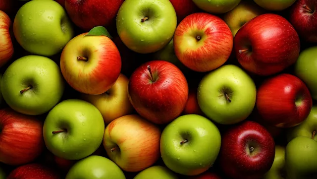

head toward this point
Website dan blog Laksamana yang dolok ya dah sekda gik. Sik tekaber nak maintain (financially).
Post yang terakhir dalam blog lamak ialah "Demos, Kratos" pada 22 Mac 2024. Banyak kisah dan isu-isu global dan dalam negara yang berlaku sepanjang ketiadaan blog ya. Isu perang Palestin, Ismail Haniyeh syahid, Yahya Sinyar syahid, isu GISBH, isu RUU Mufti, Belanjawan 2025.
Bahkan kehidupan peribadi Laksamana dikpun turut diwarnai dengan pelbagai kisah.
Bukan bermaksud Laksamana tuk penting. Bukan bermaksud "the universe revolve around me". Setiap orang yang Laksamana kenal sedang menghadapi gelombang kehidupan masing-masing. Arah tuju hidup ya yang penting.
Apa arah tuju perjalanan baru tuk?
Dalam banyak-banyak hal yang berlaku macam yang dipadah tadik, Laksamana rasa kebanyakan tema nya ialah politik. Politik tuk banyak jenis - politik negara, politik dunia, office politics dan bahkan dalam rumah pun boleh ada unsur-unsur politik.
Adakah tuk bermaksud Laksamana semakin sibuk dengan kisah politik sampekan semua benda dilihat dari matakaca politik? Mungkin. I don't think it's a good thing. Bahkan post "Demos Kratos" ya pasal politik juak, walaupun Laksamana madah bukan.
I need a clear vision. Writing it down will help.
Laksamana masih minat membaca buku. Bila muncul idea baru, Laksamana gian rasa nak menulis. Jadi, blog tuk ialah tempat tumpahnya idea. Laksamana suka mencari-cari perumpamaan (analogy) terhadap perkara-perkara dalam kehidupan. Contohnya Laksamana pernah menulis pasal perumpamaan staff seperti darah yang mengalir dalam badan, ataupun kisah semut dan belalang, dan falsafah gelas Mug.
Laksamana start balit perjalanan yang terhenti. Minat dan corak pemikiran masih sama. Platform tuk lain sikit dari Wordpress, tapi Laksamana suka sebab boleh manually design HTML + CSS suka hati. So banyak benda yang Laksamana perlu kemas lok.
M. Shahrim
• a programmer from Sibu